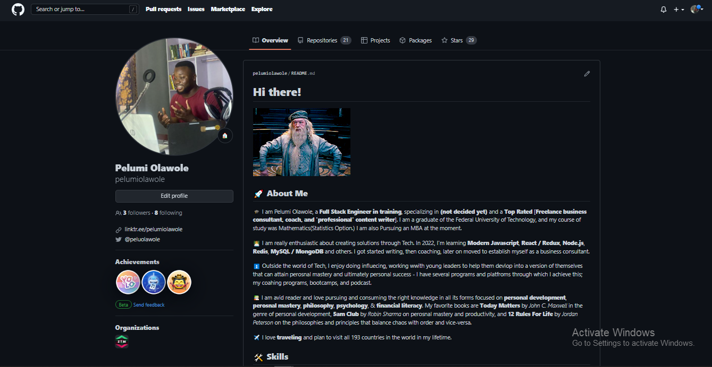

Home > Projects
My Projects
All my projects can be found on my Github profile.
My Projects Repositories
Here are my Top 5 Project Repos
- I4G x Zuri Training Projects Repo
- My very first Public Repo
- My first Open-Source Contribution Repo
- ALX's 'What Happens When' Project Repo
- Fix My Code Challenge Project Repo
I am currently undergoing a rontend and Python training with I4G x Zuri, and also a Software Engineering training with ALX. Below are some repos from both trainings and my contribution to some open-source projects as a beginner;
Click here to view my full Github Repositories.